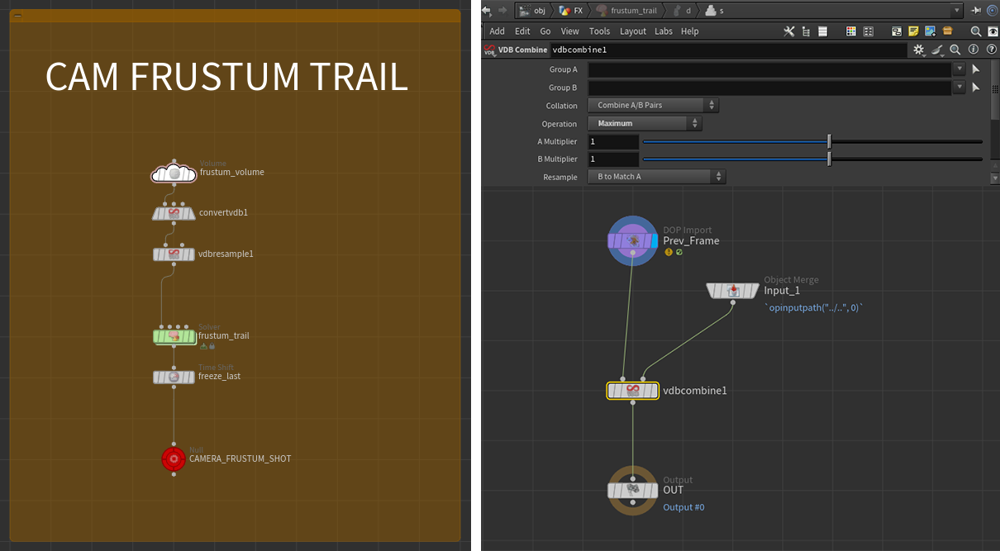

Frustum cull simulations and moving cameras
When working on heavy simulations, sooner or later, it gets to the point where some degree optimization is needed. Maybe to squeeze in that extra bit of detail but RAM is not enough, or simply because an iteration already takes 2 days.
More generally, we'd love things to go through the farm without someone from system (or production) yelling from across the studio. Or worse, our workstation going Fatal error: Segmentation fault.
On top of clustering, a very common operation in these situations is camera culling at simulation time.(1)
Depending on the solver you're using, you might opt for a toNDC-check or a volumesample-the-frustum approach, you name it.
- me coming at you like "here, have some of my latest discovery" proceeds to show a glass of water
Unfortunately, camera culling in a solver doesn't really do well in those scenarios where the simulation must be computed in regions that are currently NOT framed by the camera, but that will eventually be. Those regions therefore cannot simply be culled, as this would prevent the simulated objects from being present when they are needed (duh ).
So how do we keep out-of-frustum stuff simming while still getting rid of it as soon as it leaves the camera?(1)
- and without using any keyframe, hate those
Houdini sample scene
Here's a simple scene demonstrating the technique covered on this page. Please feel free to download and check it yourself.
That said, if you're down for some yapping (or downloads are blocked by your studio lol), keep reading.
Imagine having to work on something like this:(1)
- damn boi, it looks like trash, lack of resolution is definitely the main issue here...
This (amazing) shot features:
-
a bunch of smoke plumes that need preroll before they appear in frame
-
an explosion happening out of camera
-
camera traveling a decent distance, looking back and then moving forward again
As I said before, I'd like to camera cull my sims as soon as they're not needed anymore (ie: left behind).
There are a few ways to achieve what we're looking for.
Fedor's Take
My dear deskmate, Fedor Koleganov, once showed me his approach to these kinds of situation.
Starting from the current frame, trail the camera frustum forward until the end of the shot range. Make a VDB out of it. Cache one for each frame. Then volumesample it at sim time: if the particle/voxel is outside, blast it/deactivate it > done!
Given a frame, trailing the camera frustum until the end of the shot returns an active area that covers everything that's going to be needed "in the future", while excluding everything that's already "gone". Pretty cool uh?
While Fedor's solution is valid, since 80% of my time in the studio consists of arguing with him, I tried to come up with a non-time-dependent version of it. That is to say, I want to load my culling grid only once, instead of having to load a different masking volume for each frame.
If you couldn't care less, then go with Fedor's approach(1), otherwise keep scrolling to see how we get to this:
- he'll be very happy, me on the other hand...
Tip
And, if you're really into this, something more advanced, like occlusion culling and custom areas masking (always following the same preroll-friendly and non-time-dependent approach):
Camera frustum trail - last_frame utility volume
This solution will also use a camera frustum volume trail.
To achieve a non-time-dependent version though, we're not going to use a 0-1 masking value. Instead, let's treat the volume as a utility grid where voxels store the last frame at which that portion of space was effectively "seen" by the camera. It's pretty straightforward:
-
First, we generate a volume grid representing the camera frustum. The volume can be quite low-res as it will simply act as a mask.
We assign the whole volume a density value of$F.
Now, the region of space seen by the camera at the current frame has a value equal to the current frame (duh). -
We then repeat this for each frame of the shot, storing in a final grid the maximum Frame value for each voxel in space. This will effectively give us the last time a certain portion of space was last seen by the camera!
We can achieve this with a simple sop solver. Inside the solver we compare the current frame and the previous one, using avdbcombinewe keep the maximum value. -
We then freeze the result at
$FEND + 1using atimeshiftand cache that one single frame! Congrats, you can now use this non-time-dependent cache to perform camera culling on all the sim layer of your setup!
Viewport visualization
The volume will look like absolute garbage in the viewport. This is because the density values will likely be very high, unless your working with a [1; N] frame range. Which is not the case, right? Right.
If you want to visualize the "active" area, you can use a Volume Visualizer with Min set to $F-1 and max set to $F.
Below you can find the implementation of what I just described. On the next paragraph we'll have a look at a few lines of vex to perform the culling inside a solver.

Node parameters
{
"frustum_volume": {
name: "last_frame",
initial_val: "$F", //Or $FF if you plan on storing subframe data
dimensions: "From Camera",
camera: "path/to/your/cam",
zmin: 0.1, //Use a meaningful value for your shot
zmax: 20, //Use a meaningful value for your shot
winxmin: -0.1, winxmax: 1.1, //A touch of padding
winymin: -0.1, winymax: 1.1, //A touch of padding
uniformsamples: "By Size",
divsize: 0.5
},
"convertvdb1": {
conversion: "VDB",
bdbtype: "Integer" //This can be skipped if you want to have subframe data
},
"vdbresample1": {
order: "Nearest",
mode: "Using Voxel Size Only",
voxelsize: 0.2,
linearxform: True //Force Axis Aligned! This is very important, VDB combine will act weird otherwise!
},
"frustum_trail": {
startframe: 950 //Your camera range start, include preroll if camera anim has some
}
"freeze_last": {
frame: "$FEND + 1" //End of your shot, plus one to avoid disappearing stuff on the last frame
}
}
Culling - Inside the dopnet
At this point everything is ready. Depending on what you're simulating, you can sample the last_frame volume, compare it with the current frame and reset fields/cull points/set attributes accordingly.
The code in the following wrangles assumes that the cached frustum trail is referenced in Inputs Tab → Input 2 → SOP.
This allows us to sample it with volumesample(1, 0, v@P).
Pyro simulation
In a gasfieldwrangle, sample the last_frame volume and set to 0 all the fields that drive the active field on the sparse solver.
I'd recommend connecting the microsolver to the sources_output Output if you're using the Pyro Solver SOP.
| Gas Field Wrangle | |
|---|---|
The vel field
Don't set vel to 0 using this method.
This results in the boundary acting similarly to a collider, let the sparse solver handle the culling of the other fields through the internal application of the active mask.
The active field
I don't recommend setting the active field directly, as it needs particular conditions to work properly.
The active field needs to be a 16x16x16 "full tile" occupancy mask, so messing up with per-voxel values will break things.
Also, depending on the Reset Rule and when you apply the culling operation, you'll likely end up having your active field being recomputed before the solve step.
(FYI: the active field is rebuilt after Sourcing and Advection, and before the Forces input operators).
Using Gas Intermittent Solve when culling (no matter the method you're using)
Be aware that volume sourcing happens every subframe. If your sim has substeps (as it should) and you're using Gas Intermittent Solve to run the culling operation only once per frame, this will result in things out of frustum being sourced and solved during the subframes. You'll end up seeing a trace of the source. (You might even notice the source popping, if you're using Min Substep = 1 and Max Substep > 1).
To avoid this, you have two options:
-
Perform the culling operation every subframe. It should be pretty fast anyway.
-
Perform the (same) culling operation on the source as well. This is not a bad idea in general, as it avoids sourcing stuff that will end up being culled anyway. Just run the source volume through the same snippet using a volumewrangle.
Or even better, on a point wrangle before the rasterization. You can easily group the points doing something like:
i@group_blast = @Frame > volumesample(1, 0, v@P);.
Gas Intermittent Solve on, 3 Substeps.
Particle simulation (POP and vellum)
To kill the particles, in a popwrangle paste:
| POP Wrangle - Kill | |
|---|---|
Most solvers know how to handle the i@dead attribute, ensuring that points are culled at the right moment.
If you need your pointcount to stay consistent, you can stop the points instead.
What about MPM?
Why are you bothering me? Are you doing mograph?
Just kidding, thing is, I didn't have much time to use the solver in production. From some quick testing tho, the following should work:
| POP Wrangle - Kill | |
|---|---|
But there's a catch. Particle removal only happens if the hasdead detail attribute is present. At the moment of testing (hou 20.5), I couldn't find what triggers its creation(1), so we're simply going to force it with a Geometry Wrangle set to Run Over Detail.
- I'm SURE newer versions of Houdini will fix this (right, SideFX?). If that happens you can skip the following.
Is culling needed every frame?
We could be more sophisticated: every frame, check whether any points have i@dead = 1, and only enable the Geometry Wrangle when necessary.
This would be a good idea since dead particles are later removed using removepoint() in vex, which is not ideal when running on all points with an if statement. But whatever.
| Geoemtry Wrangle - Detail - Enable particle reaping | |
|---|---|
If instead you'd like to stop the points, it'll be easier (but only starting Houdini 21, see Auto Sleep):
RBD solver
Similar to particles, we're going to use a popwrangle. Again, to kill the out-of-frustum pieces use:
| POP Wrangle - Kill | |
|---|---|
To simply stop the pieces instead:
Extra: more than just frustum based masking
The cool thing about this utility volume is that we are not limited to the camera frustum. We can further customize the mask. We have two ways of doing so:
-
Protect certain regions. This can be easily achieved by vdb-merging a custom volume (e.g. a box) with a i@last_frame that is high enough (e.g.
i@last_frame = 99999) to prevent any object from being culled. Of course this can also be more sophisticated, for example protecting things only during the preroll (e.g.i@last_frame = 1001). -
Carve out certain regions. This can be achieved by clipping away parts of the volume. (Remember, if no volume is found when sampling this results in culling!) For example you can use this to remove smoke that somehow got inside a collider(1), or even behind it (say, dust rolling behind a building)!
I'd recommend checking outvdbocclusionmask. Given a camera, it's a great tool that can help you compute regions of space that are occluded by an object.
When masking VDB areas,vdbclipis your friend, use the Mask VDB mode.- Potentially allowing you to use a smaller Interior Band when generating your collision sdf.
Both operations if needed, for example in case of animated colliders, can be performed on the frustum volume before the SOP solver. This will ensure that each frame gets the proper masking, the max-merging operation will take care of the rest!